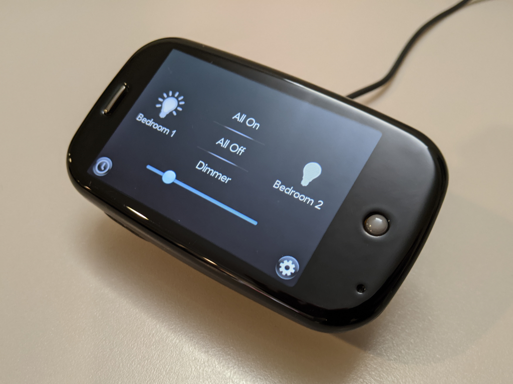

Things to Try on webOS
webOS is not a dead platform! There's still plenty of things you can on your webOS device. Here's a couple suggestions to get you started....
Websites
More and more websites are moving to newer encryption over HTTPS as the only way to access the site. On webOS 2.2.4 and above, the Modern TLS Updates solve this outright; a proxy is an alternative. On older versions you are more limited. Here are some common websites that work, or ways to work around:
Common Sites
-
Google's website no longer works. Try DuckDuckGo Lite instead — and if you're using the WOSA proxy, your Google searches are re-directed there automatically
-
YouTube's website no longer works, but there's an app for that called MeTube, or you can try a retro-friendly Invidious provider
-
Reddit still works once your device can reach HTTPS — through the TLS Updates or a proxy — via http://old.reddit.com or the excellent IAmA Reddit App. Reddit videos can also be watched in MeTube!
-
Wikipedia works great once you have HTTPS. For older devices, webOS archive provides a "tiny" version that is periodically updated at wikipedia.webosarchive.org
Alternatives
-
RSS: many sites can be accessed through their RSS Feed using the FeedSpider app, and a free service like InoReader
-
Google News: retro-computer enthusiast Action Retro has built an excellent text-only Google News web app that works on almost anything. Check out 68k.news
-
Text-Only Web: many popular sites have a text-only version that works well on a variety of retro devices. Sijmen J. Mulder has assembled a good list here: http://sjmulder.nl/en/textonly.html
-
FrogFind: also by Action Retro, is search engine for older devices, and renders a simplified version of most websites through its search results
Play Some Games
webOS had a great library of games, and you don't have to worry about in-app-purchases and spyware. Just some great mobile classics, including offerings from big publishers like Gameloft and EA. No matter which webOS device you have, you'll find some great entertainment in the games section of the App Museum. Here's a couple suggestions to get you started...
- Angry Birds - The original, and some of the variations, covering every screen size
- SCUMMVM - Play dozens of PC point-and-click adventures on your TouchPad
- The Sims 3 - The addictive classic had a great offering on the Pre, and has recently been patched to work on TouchPad and Pre 3 as well.
- Snes9X EX - webOS is home to many emulators, start with this near-perfect Super Nintendo emulator for Pre through to the TouchPad
- Assassin's Creed - A giant adventure for your mobile device
- Oregon Trail - The video game that taught a generation how to play video games has a beautiful version for the TouchPad
- Miriel - These games keep my youngest daughter busy for hours
Apps
All of the Apps listed below can be found in the App Catalog, but there's direct download links as well.
Watch (Some) Videos
YouTube doesn't officially support webOS (or most retro platforms) but thanks to the open source community, its still available. An app called MeTube, available in App Museum II, works with a pair of back-end services to fetch short YouTube videos for you on demand. The services are hosted by webOS Archive, but you can also run them yourself.
FlixNet is an app for watching Public Domain movies hosted on archive.org. There's an expansive catalog of free and legal-to-download movies that play perfectly on webOS.
If you host your own Plex server, you can configure it to support Plex for webOS -- be aware transcoding is not supported, so only content natively supported by webOS can be streamed.
Podcasts
webOS devices make great Podcast listening tools -- whether its a TouchPad sitting in Touchstone, maybe connected to a nice Bluetooth speaker, or a tiny little Pre or Veer, slipped in your pocket as you go about your routine. Many Podcasts have switched to HTTPS, which causes problems for older, encryption-challenged devices, but the webOS Archive Podcast Directory service solves this, and many other problems. Combined with a stand-alone Podcast Directory app, and a number of Podcast players available in the Museum, you can download and listen to thousands of popular podcasts right on your device.
- Search the Podcast Directory
- Download the webOS App
- Check out some Podcast Player Apps
- Self-host the service
The Ultimate Night Stand App
Philips Hue lights are some of the best smart bulbs out there -- whether you use their standard bulbs, color changing bulbs, or their Wake-Up light with sunrise simulation. A little Palm Pre or Veer, or even a TouchPad make great companions, allowing you to control them in a dark room... without needing to put a smart speaker in your room listening to you sleep!

One Night Stand is a night table clock that switches to a light controller with just a tap. It connects your smart home to webOS with a classy app that turn your Pre, Veer or TouchPad into an elegant controller.
- Download One Night Stand
- Learn more about Philips Hue
Rock Out
Pandora, and third party Pandora apps still work on all devices as of 2026.
If you have a TouchPad, the wonderful iTunes remote control app, Retune, still works to control Apple Music or iTunes playback, and can even send audio to HomePods and AppleTVs. You'll need to temporarily disable your computer's firewall for pairing, but once done, you can turn the firewall back on and use as normal.
With some caveats, the Plex app still works with modern Plex servers as well.
Read a Book
The TouchPad makes a great reading device (the TouchPad Go is even better -- if you can find one!) and a number of eReader apps were released.
Kindle
Amazon's Kindle Beta app was an excellent release. Despite the moniker, it was fully functional, and can sometimes be coerced into functionality today. When you login with your Amazon credentials, watch your phone or email for a One-Time Password (OTP) from Amazon that you'll use for your second login attempt (sometimes this takes multiple attempts!) Once that's done, your fully library of books will be available: including color illustrations where the book content includes them!
- Download Amazon Kindle Beta
Papyrus eReader
Released in 2026, and derived from the Kindle app and an older indy project, pReader, Papyrus is a modern take on DRM-free ePub reading for the TouchPad. Still being maintained, this reader can import most ePub books (although it takes awhile for larger books!) and provides a pleasant reading experience.
- Download Papyrus eReader
Be an Exhibitionist
webOS 2.0 and above have a mode called Exhibition, that allows your device to continuously show content while on its charging dock. A photo slide show is an obvious choice -- load up your device with your favorite pictures of family, pets, or scenery, and let the exhibit roll by.
If you'd rather get some information, Accuweather still works on all devices, and on the TouchPad includes a gorgeous Exhibition mode that shows the weather where you are, or in other locations of your choosing.
- Download Accuweather
Or, if you have Calendar Sync setup, you can display today's agenda with AgendaZ found in Preware.
Remote Control
The App Museum has working apps (some need some tweaks) for remotely controlling Windows, Mac and Linux machines via Splashtop, Remote Desktop or VNC. You can also control Roku devices, or an iTunes library -- including connected speakers like Home Pods.
Classic
The Classic Emulator was originally only available for webOS 1.x but thanks to community efforts, it can be made to work on most webOS devices (some devices have no sound, Pre3 is not compatible), and gives you access to a cool catalog of vintage PalmOS apps and games!
Depending on your OS version, you'll need to install some components:
- All OS versions: Install Classic Emulator from App Museum II like any Museum app.
- webOS 2.0 and above only: Install Classic Container using webOS Quick Install on your computer.
Classic expires after a week, to avoid this, always run Classic with your device in Airplane Mode, then when the expiry date hits, you can re-arm the timer. Quit the app, then:
- Using the command line or Internalz, delete the file:
/usr/lib/palmos/expired.rgba
You can find tons of PalmOS apps and games at PalmDB.net.
Make Something New
webOS is an easy platform to learn to develop on -- and modern AI tools make it even easier. The community has built or ported more than 50 apps since the HP shut down the platform, and there's more to come!
Based on Javascript, and powered by Linux, webOS an easy environment to explore, reverse engineer and build upon. If you can make (or vibe-code) a web page, you can make an App for webOS! Check out the SDK section for more info about getting started!